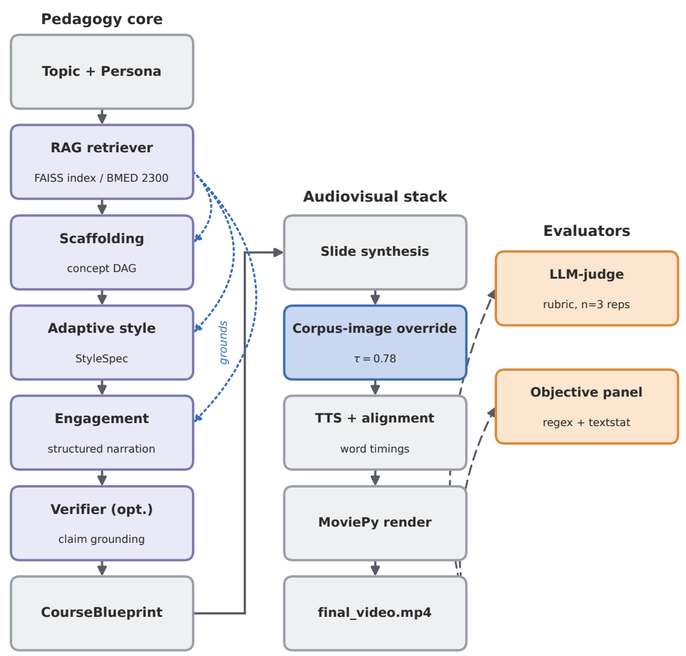
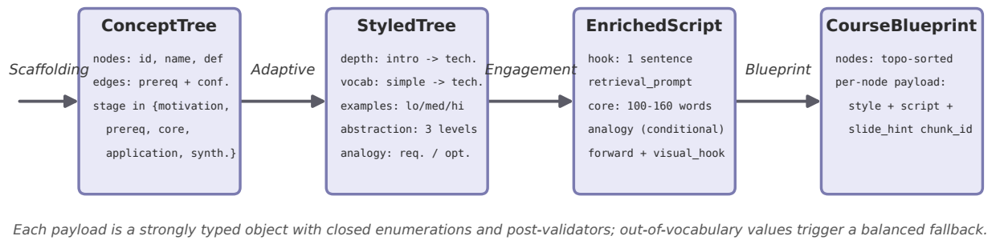
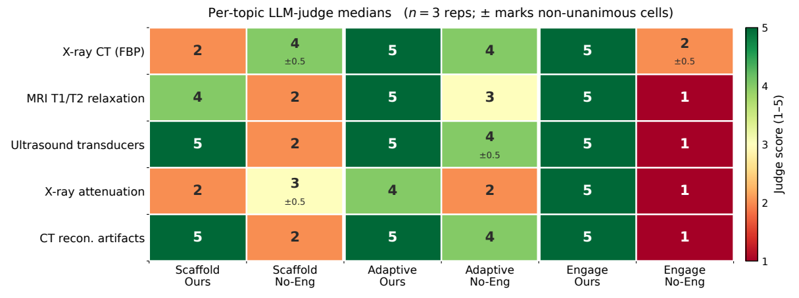
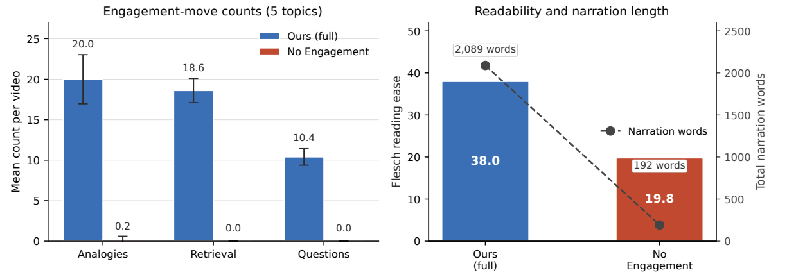
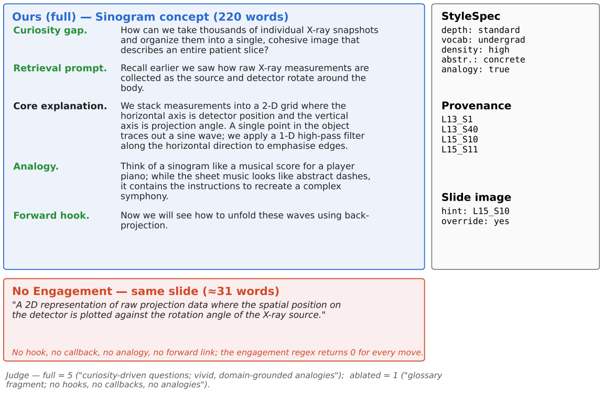

Overview
Text-to-video models can already produce fluent educational clips. Whether those clips actually teach is a different question. Good instruction needs pedagogical content knowledge: concepts introduced in prerequisite order, depth matched to the learner, and moves that keep a student thinking. Standard prompt-chaining pipelines do not encode any of this explicitly.
CourseBlueprint replaces free-form prompt chaining with typed, validated intermediate representations. Given a topic and a learner persona, it builds a teaching blueprint grounded in a real course corpus (BMED 2300: 23 lectures, 1,116 slides), then renders it as a narrated video. Every instructional decision is an inspectable object that can be switched off for ablation.
🏗️ System Architecture

Figure 1: A course-grounded pedagogy core (scaffolding, adaptive style, engagement, optional verifier) produces a typed blueprint. The blueprint drives the audiovisual stack, where high-confidence retrieval triggers a corpus-slide override.
- Scaffolding: builds a stage-labeled prerequisite concept graph. A greedy minimum-confidence cycle break guarantees the graph is acyclic.
- Adaptive style: assigns each concept a style specification (depth, vocabulary, example density, abstraction, analogy) from closed vocabularies.
- Engagement: writes narration under a fixed contract: curiosity hook → retrieval prompt → core explanation → analogy → forward link.
- Slide-image override: when the top retrieved slide scores above τ = 0.78, the instructor's original slide goes into the video instead of a generated image.
📐 Typed Instructional Contracts

Figure 2: Each module receives a strongly typed object and emits another. Out-of-vocabulary values are rejected and trigger a fallback.
📊 Results
Five biomedical-imaging topics, full pipeline vs. the same pipeline with the engagement contract removed. Judge scores are 1–5 medians over three repetitions.
| Variant | Scaffolding | Adaptive | Engagement | Analogies / video | Retrieval prompts / video | Flesch ease |
|---|---|---|---|---|---|---|
| Full pipeline | 3.60 | 4.80 | 5.00 | 20.0 | 18.6 | 38.0 |
| No engagement contract | 2.60 | 3.40 | 1.20 | 0.2 | 0.0 | 19.8 |

Figure 3: Per-topic judge medians. Engagement is essentially binary (5 vs. 1–2) across all topics.

Figure 4: Engagement moves per video, and readability with narration length. The full pipeline writes ~10× more narration, and it is easier to read.
The main finding is that the engagement contract does more than add engagement. Removing it also drops the adaptive score from 4.80 to 3.40. The style controller specifies persona-appropriate depth, but the engagement generator is where that style actually reaches the narration. Separately, the slide-image override turned a 0-of-9 grounding failure into 9-of-10 correct slide reuses on the same topic.
🔍 What the Difference Looks Like

Figure 5: The same sinogram slide. The full pipeline produces a 220-word narration with all five engagement moves; the ablation produces a ~31-word glossary fragment.
⚠️ Limitations
- Five topics, and only the engagement module is ablated. Scaffolding-off and adaptive-off ablations and multi-persona runs are planned.
- The judge comes from the same model family as the generator. Within-judge variance is small, but cross-family agreement is not yet established.
- No human-learner evaluation yet.
🚀 Key Contributions
- A course-grounded video-generation pipeline built on typed instructional contracts instead of prompt chaining.
- A deterministic slide-image override that reuses instructor slides whenever retrieval is confident.
- A reusable BMED 2300 benchmark corpus and evaluation harness combining repeated LLM-judge scoring with regex-grounded objective metrics.
- Evidence that structured engagement is the load-bearing pedagogical component in this setting.
📝 Citation
@article{islam2026courseblueprint,
title = {CourseBlueprint: A Structured Pipeline for Adaptive Pedagogical Video Generation Grounded in Course Corpora},
author = {Islam, Md Zabirul and Manik, Md Motaleb Hossen and Wang, Ge},
journal = {arXiv preprint arXiv:2606.20608},
year = {2026}
}